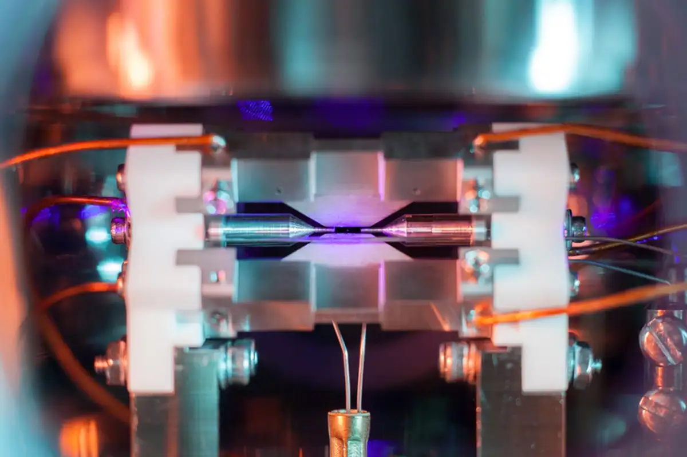

Bohr's Model Simulator

Source: New Scientist <https://www.newscientist.com/article/2161094-a-single-atom-is-visible-to-the-naked-eye-in-this-stunning-photo/>
How to use our Website
- In the top right corner, select the drop down menu which lists the first 20 elements
- Click the one you would like to display
- You should see the desired atom, with the protons and neutrons in the centre and the electrons slowly orbiting in shells. Furthermore, specific information such as the element's: atomic number, mass, symbol, group, group number and period number
- Scroll up and down to increase/decrease the size of the atom, and click and drag the screen to rotate the atom.
What is an Atom
Atoms are the very building blocks of the world as we know it. From plants, to buildings to humans, and even the air we breathe, atoms make up literally everything around us. Atoms are extremely small particles that are composed of three smaller subatomic particles; Protons, Neutrons and Electrons. Protons have a positive charge and are located in the nucleus(centre) of the atom, along with neutrons which have no charge. Electrons, which have a negative charge and much smaller of a mass than protons and neutrons, are found in shells(orbital rings) that are found around the nucleus.
Different elements have different numbers of protons, neutrons and electrons which not only determine the element of the atom but also how much mass it has, how reactive it is, and many other properties.
History of the Atom
Our understanding of the atom has evolved over time with new discoveries and theories providing insight into the properties of atoms.
- Democritus, 400 BC:
- Nearly 2400 years ago, Greek philosopher Democritus proposed his atomic theory. He believed that everything around us was made of tiny indivisible particles called atomos (Greek term for atoms). He also stated that all atoms were uniform, solid, indestructible and that they moved infinitely through empty space until stopped.
- John Dalton, 1804:
- Dalton believed that All matter is composed of extremely small particles called atoms. Atoms of a given element are identical in size, mass, and other properties. Atoms of different elements differ in size, mass, and other properties. Atoms cannot be subdivided, created, or destroyed.
- JJ Thompson, 1897:
- Thompson's cathode ray tube experiment concluded that all atoms contain tiny negatively charged subatomic particles or electrons. Thomson proposed the plum pudding model of the atom, which had negatively-charged electrons embedded within a positively-charged "soup."
- Ernest Rutherford, 1911:
- Through his gold foil experiment, he demonstrated that atoms consist of a small, dense, positively charged nucleus surrounded by electrons. This finding shifted the atomic model from Thomson's "plum pudding" model to the nuclear model, advancing atomic science.
- Niels Bohr, 1913:
- Niels Bohr revolutionised atomic theory by proposing that electrons orbit the nucleus in fixed energy levels, each corresponding to a specific energy. His model explained atomic stability and spectral lines. Bohr's theory bridged classical and quantum mechanics, advancing understanding of atomic structure and laying groundwork for quantum theory.
- Erwin Schrödinger, 1926:
- Erwin Schrödinger contributed to atomic theory by developing the wave equation, which described electrons as wave-like particles in "orbitals" rather than fixed paths. This quantum mechanical model helped explain electron behaviour, probability distributions, and the nature of atomic energy levels, advancing our understanding of atomic structure.
- James Chadwick, 1932:
- James Chadwick discovered the neutron in 1932, a breakthrough that explained atomic mass discrepancies. This discovery allowed for a better understanding of isotopes and significantly advanced atomic theory.
Isotopes
Isotopes are variations of the same element that have the same number of protons but different numbers of neutrons. This difference in neutron count doesn’t change the element's chemical properties but does affect its atomic mass. For example, carbon has isotopes like carbon-12 and carbon-14; both have 6 protons, but carbon-12 has 6 neutrons while carbon-14 has 8. Some isotopes are stable, while others are radioactive, meaning they break down over time and release energy. Isotopes are important in science and technology, used in fields like medicine, archaeology, and environmental studies for dating and diagnostic purposes.
Ions
Ions are atoms or molecules with an electric charge. They form when an atom gains or loses electrons, disrupting the balance between positively charged protons and negatively charged electrons. If an atom loses electrons, it becomes a positively charged ion, called a cation. If it gains electrons, it becomes a negatively charged ion, known as an anion. Ions are important in chemistry because they help form compounds and conduct electricity. For example, common salt (sodium chloride) is made from sodium and chloride ions. In our bodies, ions play key roles in nerve signals, muscle contractions, and balancing fluids.
Radiation
Alpha, beta, and gamma radiation are three types of radioactive decay produced by unstable atoms seeking stability by releasing energy in the form of particles or electromagnetic waves.
- Alpha Radiation
- Alpha Radiation involves the emission of alpha particles, which consist of two protons and two neutrons. These particles are relatively heavy and carry a positive charge. Due to their size, alpha particles are slow-moving and have low penetration power, easily stopped by paper or human skin. However, if inhaled or ingested, alpha radiation can cause significant internal damage.
- Beta Radiation
- Beta Radiation emits beta particles, which are high-energy, high-speed electrons or positrons. Lighter and more penetrating than alpha particles, beta radiation can pass through paper but is typically stopped by materials like aluminium. Beta radiation can penetrate the outer layers of skin, so prolonged exposure should be avoided.
- Gamma Radiation
- Gamma Radiation releases gamma rays, which are a form of electromagnetic radiation, similar to X-rays but with even higher energy. Gamma rays are highly penetrative, capable of passing through the human body and dense materials like concrete, though lead or thick concrete can effectively block them. Gamma radiation is especially dangerous due to its ability to penetrate deep into tissues, potentially causing cellular damage.